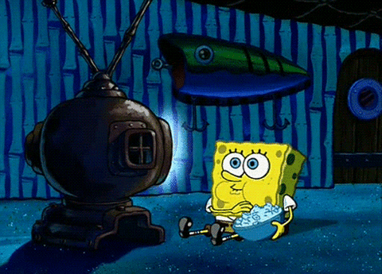

About
Data Scientist & ML Engineer
A data professional who loves to find creative and efficient solutions to challenging puzzles. A chameleon who can wear multiple hats and quickly adapt to my environment. Individuality, inclusivity, and details are an essential part of my work, and I am a firm believer that every question has an answer.
Skills
Libraries and softwares I am proficient in:


Blog Posts

Surviving Week 1 of GA's DSI
A short chronicle of my first week of as a DSI (Data Science Immersive) Student.
Fusion: Data Science and Media
A look through the evolution of AI and Machine Learning application in Media and Entertainement.

Barely Surviving the Sequel
The sequel to my first post titled "Surviving Week 1 of GA's DSI." In this blog post, I talked about my experiences, trials, and stress that came now that I am halfway through my DSI course.